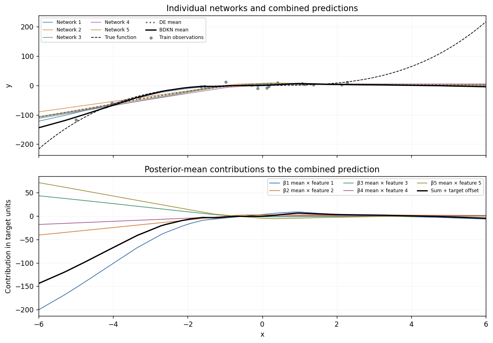
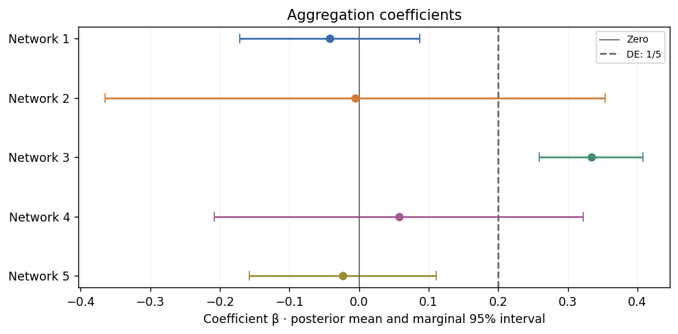
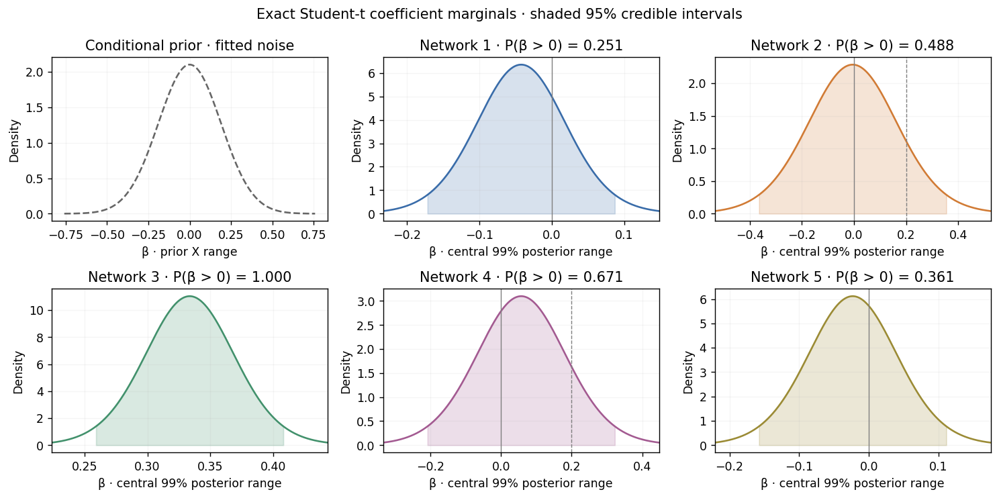
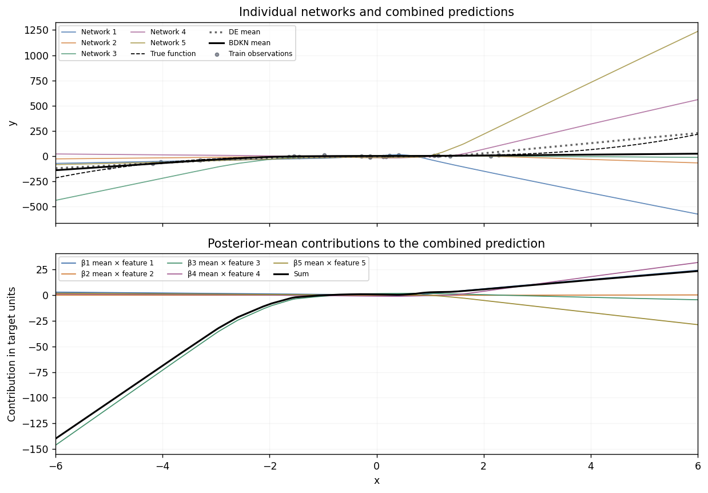
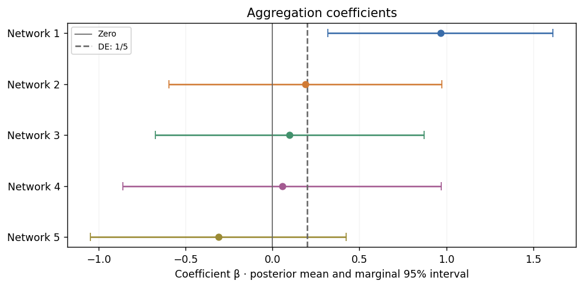
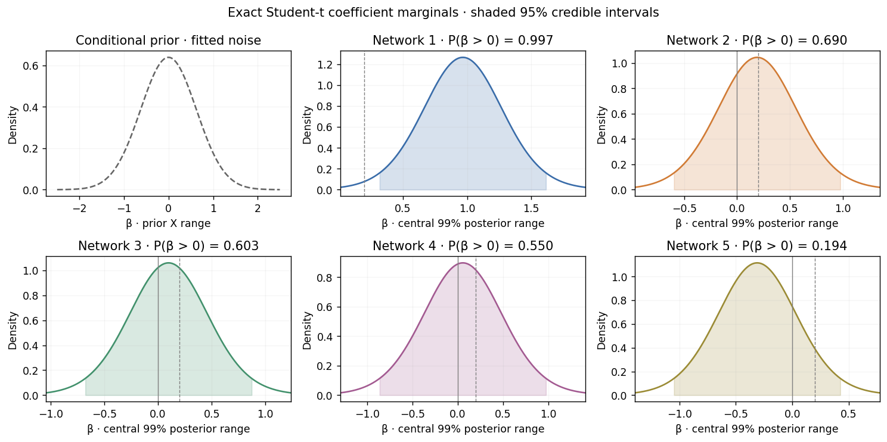
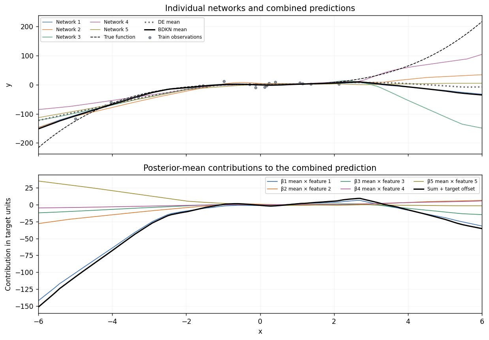
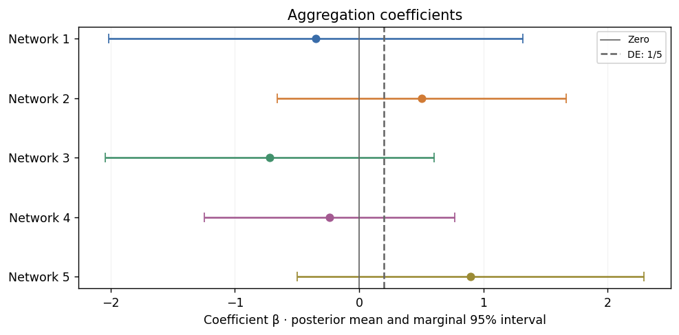
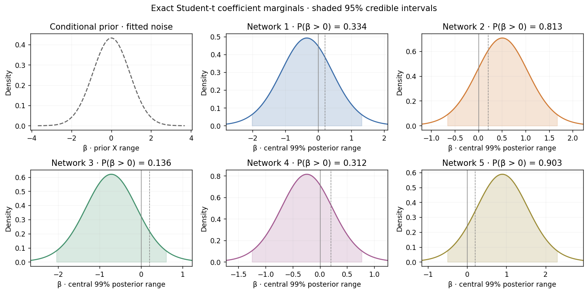
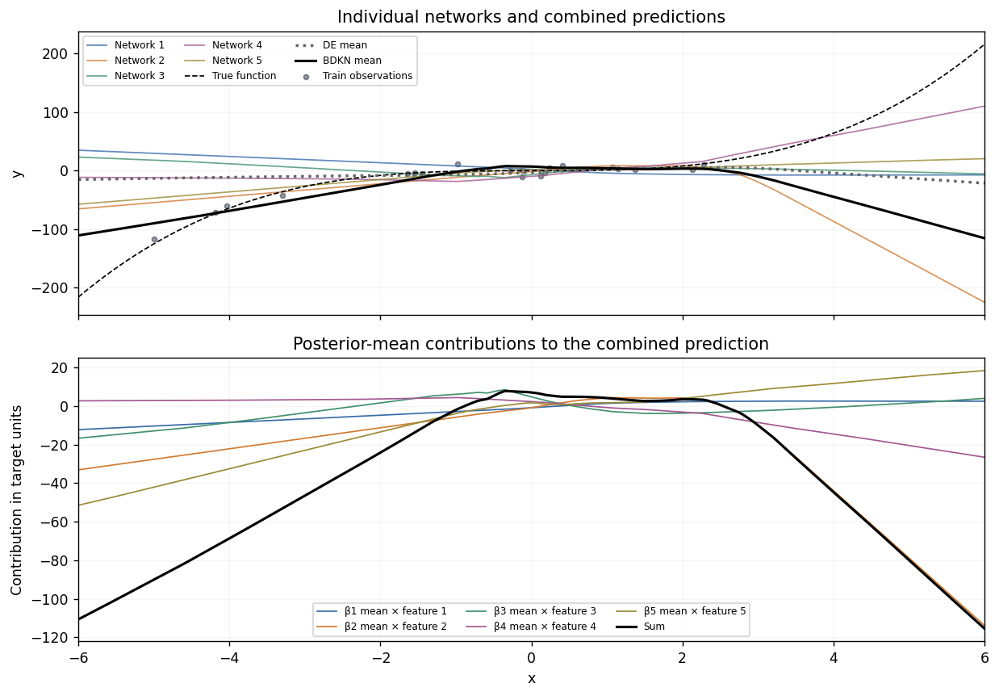

Regression comparison
Download resultsAggregation weights
Coefficients can be negative and need not sum to one. Intervals describe coefficient uncertainty; the dashed reference is DE’s fixed 1/H weight.
BDKN


Each density panel uses its own X range for readability; coefficient intervals above share a common axis. Prior reference conditions on fitted noise. Contribution shares use held-out inputs; test targets are used only for scoring.
| Network | β mean | 95% low | 95% high | P(β > 0) | Contribution share | Test RMSE | Test NLL |
|---|---|---|---|---|---|---|---|
| 1 | 1.64634 | 0.98409 | 2.30859 | 0.99998 | 0.48029 | 62.55445 | 11.62638 |
| 2 | 0.45083 | -0.98652 | 1.88817 | 0.73980 | 0.12782 | 62.95527 | 16.43550 |
| 3 | -0.38688 | -1.78622 | 1.01246 | 0.28528 | 0.12531 | 62.36362 | 10.38803 |
| 4 | 0.16634 | -0.64366 | 0.97633 | 0.66352 | 0.05730 | 60.95023 | 43.23640 |
| 5 | -0.67137 | -2.07639 | 0.73364 | 0.16539 | 0.20927 | 62.64652 | 21.54277 |
Functional repulsion · BDKN



Each density panel uses its own X range for readability; coefficient intervals above share a common axis. Prior reference conditions on fitted noise. Contribution shares use held-out inputs; test targets are used only for scoring.
| Network | β mean | 95% low | 95% high | P(β > 0) | Contribution share | Test RMSE | Test NLL |
|---|---|---|---|---|---|---|---|
| 1 | -0.04239 | -0.17168 | 0.08691 | 0.25096 | 0.14892 | 288.87763 | 25.95214 |
| 2 | -0.00519 | -0.36434 | 0.35395 | 0.48812 | 0.00213 | 93.49920 | 13.17679 |
| 3 | 0.33366 | 0.25917 | 0.40815 | 1.00000 | 0.54515 | 107.20588 | 10.15514 |
| 4 | 0.05718 | -0.20791 | 0.32226 | 0.67120 | 0.15368 | 163.34568 | 16.80881 |
| 5 | -0.02320 | -0.15754 | 0.11114 | 0.36122 | 0.15013 | 414.87639 | 33.76994 |
Weight repulsion · BDKN



Each density panel uses its own X range for readability; coefficient intervals above share a common axis. Prior reference conditions on fitted noise. Contribution shares use held-out inputs; test targets are used only for scoring.
| Network | β mean | 95% low | 95% high | P(β > 0) | Contribution share | Test RMSE | Test NLL |
|---|---|---|---|---|---|---|---|
| 1 | 0.96650 | 0.31836 | 1.61463 | 0.99724 | 0.55967 | 68.77863 | 9.19969 |
| 2 | 0.19010 | -0.59586 | 0.97605 | 0.69030 | 0.13879 | 49.31172 | 19.53978 |
| 3 | 0.09791 | -0.67593 | 0.87174 | 0.60273 | 0.09641 | 107.13405 | 13.75891 |
| 4 | 0.05543 | -0.86056 | 0.97143 | 0.54960 | 0.04560 | 37.38819 | 4.93257 |
| 5 | -0.31125 | -1.04727 | 0.42477 | 0.19410 | 0.15954 | 60.73124 | 19.32560 |
First-order repulsion · BDKN



Each density panel uses its own X range for readability; coefficient intervals above share a common axis. Prior reference conditions on fitted noise. Contribution shares use held-out inputs; test targets are used only for scoring.
| Network | β mean | 95% low | 95% high | P(β > 0) | Contribution share | Test RMSE | Test NLL |
|---|---|---|---|---|---|---|---|
| 1 | -0.34877 | -2.01585 | 1.31831 | 0.33361 | 0.07526 | 92.93717 | 14.77370 |
| 2 | 0.50614 | -0.65649 | 1.66877 | 0.81268 | 0.44499 | 131.88374 | 16.28843 |
| 3 | -0.71768 | -2.04145 | 0.60609 | 0.13574 | 0.08096 | 86.76921 | 9.32113 |
| 4 | -0.24033 | -1.24814 | 0.76748 | 0.31215 | 0.12396 | 55.54925 | 5.96358 |
| 5 | 0.89795 | -0.49841 | 2.29431 | 0.90259 | 0.27483 | 62.71737 | 16.92759 |